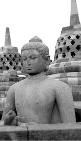
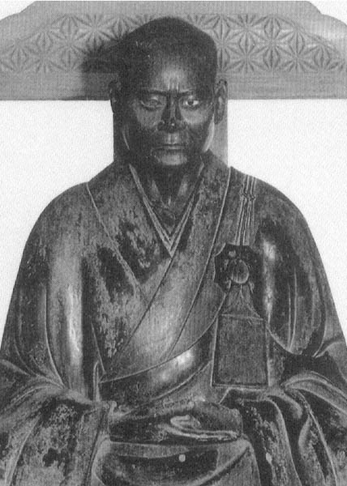
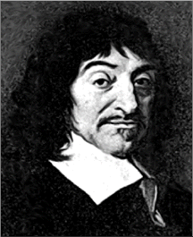
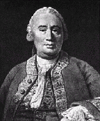
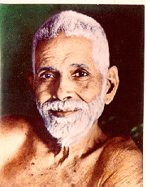
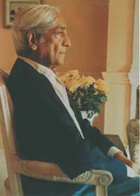

INQUIRY
There are two approaches found throughout world religions and philosophies:
The first is: "This is the truth - now convince yourself of it!"
If you care to look long enough, you can find any view - philosophical, religious, ethical - advanced and advocated by some thinker or school of thought. Absolutely contradictory doctrines are defended with conviction by extremely intelligent people and often in a convincing manner. Whatever view you may hold, you can be sure that somewhere, at some time, the opposite view was held by someone just as smart and well-intentioned as you. This is particularly true in the realm of what may be called "speculative metaphysics", concerning issues such as being, space and time, consciousness and knowledge. All possible points of view on these questions can be advanced with some good arguments, but without conclusive proof. Some of the greatest minds in history - Plato, Aristotle, Nagarjuna, Vasubandhu, Kant, Hegel, and many others- have argued manifold positions without being able to prove any of them once and for all.
What can be concluded from this? I suppose it is possible that, within all the various theories and systems, there is one that is true, and all the others are false. This seems unlikely, however, for if it were the case I suspect that the true system would eventually demonstrate its superiority and establish itself. Rather, it seems that philosophical views are more like artistic creations, which exhibit beauty and meaning to some, but not all, who consider them.
The other is "One must inquire for one's self into the nature of things - here are some tools to aid in this endeavor."
The texts presented here, drawn from various times and cultures, belong to the second approach.

Buddha (~ 460-380 B.C.E.)
Maha-Satipatthana Sutta (DN22)
Some consider this the most important Sutra from the Pali Canon. It outlines an extensive program for inquiry into the various facets of the self.

Bassui Tokusho (1327-1387)
Bassui makes inquiry sound simple, and perhaps it is, at least as far as what the process itself calls for.

Rene Descartes (1596-1650)
from the Meditations:
Descartes "Cogito ergo sum" is too easily dismissed these days. There is a good reason why he is one of the towering figures in the western philosophical tradition, and its not just a matter of "historical" importance.

David Hume (1711-1776)from A Treatise of Human Nature
Hume took a look inside to find the "self" and discovered there wasn't one. Sound familiar?

Ramana Maharshi (1879-1950)
Like Bassui, Ramana Maharshi pared inquiry down to its bare bones: "Who am I?"

J. Krishnamurti (1895-1986)
Krishnamurti comes full circle and sounds alot like the Mahasatipatthana Sutra.
This page maintained by Dante Rosati. Email me with any suggestions etc.